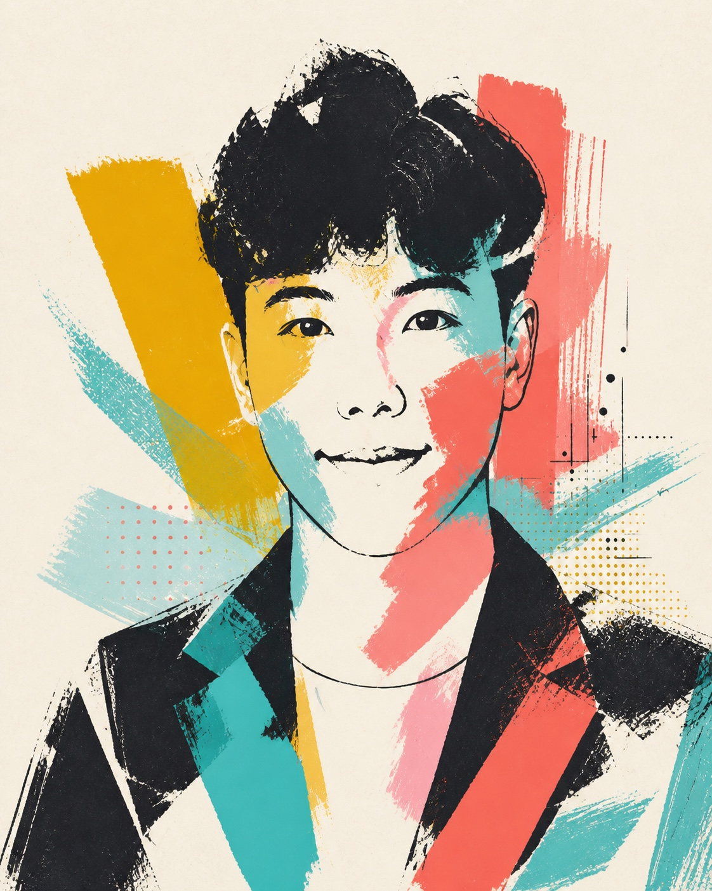

01Image / note to add
Frames
Photography, depth of field, and the small decisions that change how a moment feels.
Haoze Ni / Selected work 2025—26
I study people, turn signals into ideas, and shape clearer experiences across marketing, design, and technology.

Blended portrait view.
Meet the person behind the work00 / In brief
I’m Haoze Ni—a marketer and designer exploring how people choose, use, and trust media and technology.
I studied Emerging Media at Boston University after Syracuse University. My work moves between audience research, digital strategy, visual communication, applied AI, and human-centered interaction.
I’m currently building Nehzova while developing projects that turn research and data into clearer decisions, tools, and experiences.
Life / Off-screen
A growing space for photographs, small observations, places, and interests. The empty frames are intentionally ready for future stories.
Photography, depth of field, and the small decisions that change how a moment feels.
Drone imaging and the pleasure of seeing familiar places from an unfamiliar height.
Games, interaction, feedback, and the systems that make people curious enough to continue.
01 / Projects
A working collection across marketing, product thinking, audience research, visual media, and interaction. Full case studies can grow from this framework.
Brand, market development, digital operations, and project-based growth systems.
ContextAdd the founding story and market opportunity.
ProcessAdd brand, operations, and system artifacts.
OutcomeAdd launches, partnerships, and measurable results.
Designed an app and integrated workflow that simplified commerce data analysis and made recurring operational decisions easier to manage.
ContextAdd the original commerce-analysis bottleneck.
ProcessAdd app screens and the integrated workflow.
OutcomeAdd time saved and decision-quality evidence.
An exploration of depth of field and perspective through drone and DSLR photography, supported by AI-assisted learning and analysis.
ContextAdd the visual question and shooting conditions.
ProcessAdd paired drone and DSLR image studies.
OutcomeAdd depth findings and the AI learning log.
Research on nostalgia, parasocial interaction, media perception, and how a long-running children’s property remains meaningful across generations.
ContextAdd the GBH research question and audience.
ProcessAdd survey design, measures, and analysis.
OutcomeAdd the strongest audience insight and implication.
Analysis of 310 livestream sessions and 80+ content frameworks across audience retention, traffic, calls to action, timing, pricing, and conversion.
ContextAdd the commerce goal and dataset definition.
ProcessAdd retention, CTA, traffic, and pricing views.
OutcomeAdd the decisions informed by 310 sessions.
A game production proposal focused on feedback, player decisions, interaction flow, and the relationship between mechanics and experience.
ContextAdd the premise, player, and experience goal.
ProcessAdd interaction flows and prototype material.
OutcomeAdd playtest feedback and next iteration.
02 / Publications
A multi-source verification framework that checks generated news summaries against source documents, Wikipedia, and web evidence before making conservative corrections.
A local-random-walk-enhanced label propagation method for discovering communities within cultural and creative IP marketing networks.
Combines multimodal sensing and temporal learning to move fall monitoring toward personalized, interpretable, and privacy-aware risk prediction.
Uses skeleton sequences and multi-dimensional attention to support accurate fall detection in a lightweight architecture designed for real-time CPU deployment.
Reviews AI-enabled home eldercare with attention to monitoring, usability, interoperability, privacy, ethics, and human-centered interaction.
03 / About
Based in Boston, working across disciplines.
I’m Haoze Ni, a marketer and designer interested in how people understand, experience, and respond to media and technology.
I earned an M.A. in Emerging Media Studies from Boston University’s College of Communication after studying at Syracuse University. My work moves between audience research, digital analytics, brand and growth strategy, visual communication, and human-centered technology.
Away from the screen, I’m drawn to photography, drone imaging, and interactive or game-based experiences—different ways of exploring how framing, movement, and feedback shape what people feel.
04 / Contact
Open to thoughtful collaborations across marketing, design, audience research, and emerging media.